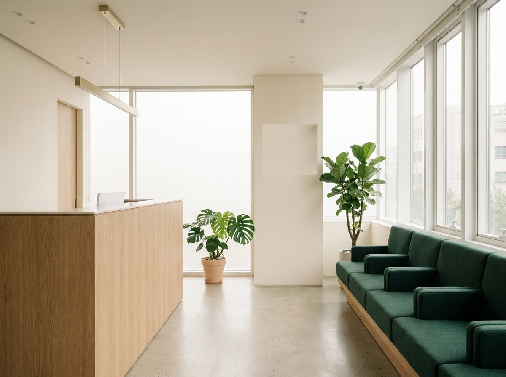
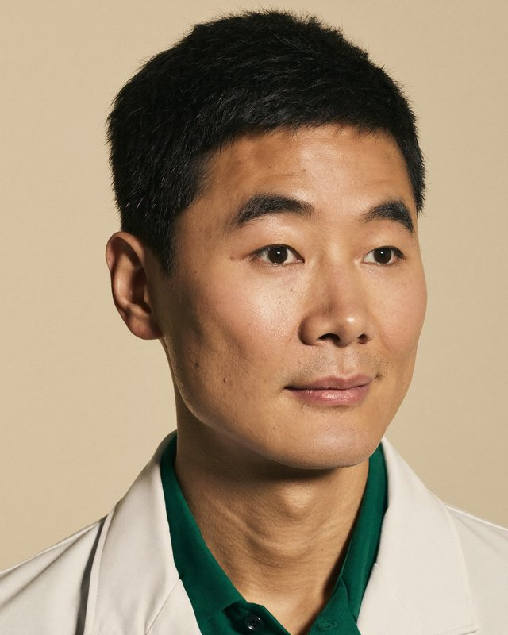
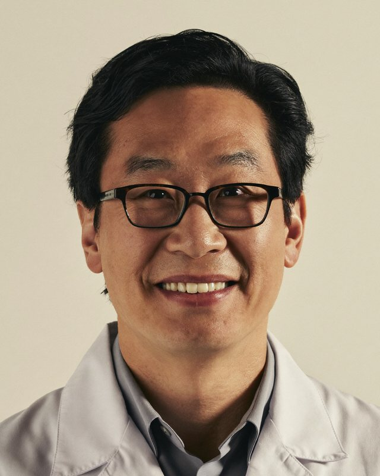
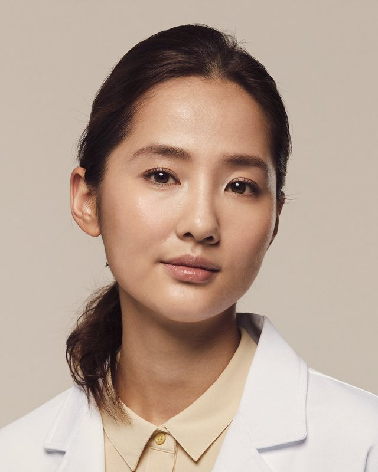

임플란트
3D CT 기반 식립 계획과 최소 절개 수술. 식립 후 10년 정기 검진으로 끝까지 관리합니다.
서울 성수 · 예약제 진료
빠른 치료보다 정확한 진단을 먼저 합니다.
오늘 하지 않아도 되는 치료는, 하지 않는다고 말씀드립니다.
평일 10:00 – 19:00 · 토요일 10:00 – 14:00
02-6402-1030
진료 철학

치아는 한번 깎으면 되돌릴 수 없습니다. 온솔치과는 자연치아를 살리는 것을 모든 치료 계획의 출발점으로 삼습니다. 3차원 정밀 진단 후, 지금 필요한 치료와 지켜봐도 되는 부분을 구분해 그대로 말씀드립니다.
진료 과목
3D CT 기반 식립 계획과 최소 절개 수술. 식립 후 10년 정기 검진으로 끝까지 관리합니다.
투명교정과 설측교정까지, 생활 방식에 맞는 장치를 함께 고릅니다. 교정과 전문의가 처음부터 끝까지.
원내 기공 협진으로 색과 형태를 자연치아에 맞춥니다. 라미네이트·크라운·인레이.
치아를 오래 쓰는 기초는 잇몸입니다. 스케일링부터 치주 수술까지 단계별로 치료합니다.
미세현미경으로 감염 부위만 정확히 제거해, 뽑지 않고 살리는 치료를 우선합니다.
6개월마다 검진·스케일링·구강 사진 기록. 변화를 추적해 치료가 커지기 전에 잡습니다.
의료진

통합치의학과 전문의

치과교정과 전문의

구강악안면외과 전문의
진료 안내
3D CT·구강 스캔·치주 검사로 현재 상태를 기록합니다. 첫날 치료를 권하지 않습니다.
원장이 직접 자료를 보며 설명합니다. 치료 범위·기간·비용을 문서로 드립니다.
합의된 계획대로만 진행합니다. 계획이 바뀌면 반드시 먼저 상의드립니다.
치료 후 6개월 주기 검진으로 상태를 추적합니다. 보증 기간 내 문제는 책임집니다.
| 평일 | 10:00 – 19:00 |
|---|---|
| 토요일 | 10:00 – 14:00 |
| 점심시간 | 13:00 – 14:00 |
| 일요일·공휴일 | 휴진 |